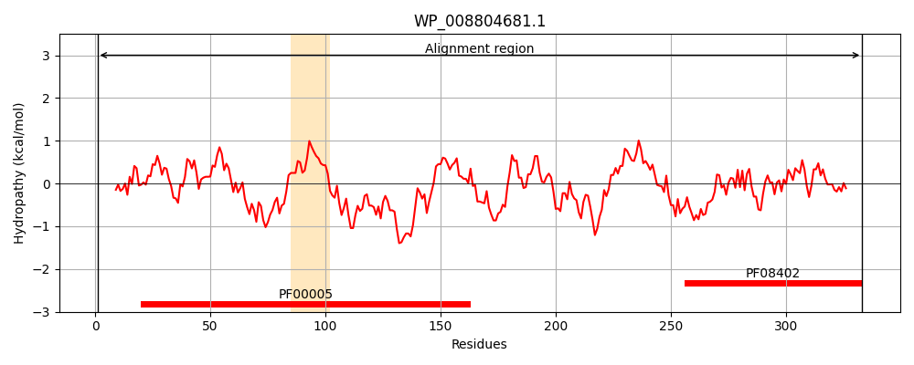
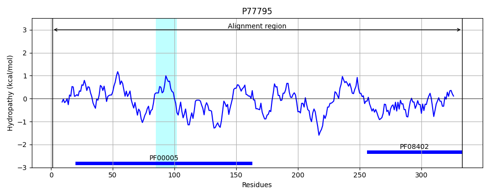
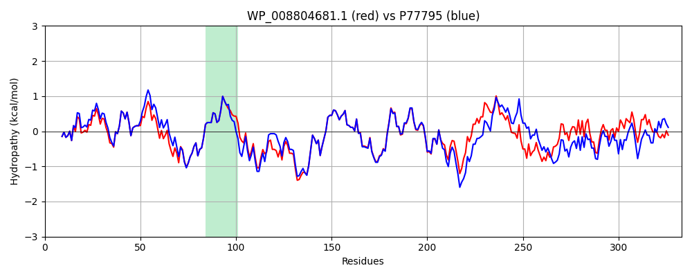

Hit Accession: P77795
Hit TCID: 3.A.1.11.9
Hit Description: gnl|BL_ORD_ID|11539 gnl|TC-DB|P77795|3.A.1.11.9 Uncharacterized ABC transporter ATP-binding protein YdcT OS=Escherichia coli (strain K12) GN=ydcT PE=3 SV=1
Mach Len: 333
e:0.000000
Query TMS Count : 1
Hit TMS Count: 1
TMS-Overlap Score: 0.900000
Predicted Substrates:CHEBI:9218;spermidine, CHEBI:8650;putrescine, CHEBI:4705;double-stranded DNA
BLAST Alignment:
Score: 1379 , Bit scores: 535 bits, E-value: 0.0e+00, Alignment length: 333, Percentage identity: 81
Query: 1 MTYAVEFQNVSRLYGDVRAVDGVSIGIRDGEFFSMLGPSGSGKTTCLRLIAGFEQLSGGTIRIFGQPASELPPWQRDVNTVFQDYALFPHMSILDNVAYGLMVKGMAKKARHARAQEALEKVALGFAHHRKPSQLSGGQRQRVAIARALVNQPRVLLLDEPLGALDLKLREQMQVELKKLQQSLGITFIFVTHDQSEALSMSDRVAVFNNGRIEQVDAPQDLYLHPKTAFVAGFVGTANVFEAEAARRLCGMPGSWSLRPEHVRLQGGGEVQVQGVVQAVQYQGAATRIELRLAEGDKLLVSQANIDGAAAASAPRMGQTVLASWSRSAMTPL 333
MTYAVEF NVSRLYGDVRAVDGVSI I+DGEFFSMLGPSGSGKTTCLRLIAGFEQLSGG I IFG+PAS LPPW+RDVNTVFQDYALFPHMSILDNVAYGLMVKG+ KK RHA AQEALEKVALGF H RKPSQLSGGQRQRVAIARALVN+PRVLLLDEPLGALDLKLREQMQ+ELKKLQQSLGITFIFVTHDQ EALSMSDRVAVFNNGRIEQVD+P+DLY+ P+T FVAGFVGT+NVF+ A +LCGM GS++LRPEH+RL GE+Q G +QAVQYQGAATR EL+L G+KLLVSQAN+ G + GQ V+ SWSR M PL
Sbjct: 1 MTYAVEFDNVSRLYGDVRAVDGVSIAIKDGEFFSMLGPSGSGKTTCLRLIAGFEQLSGGAISIFGKPASNLPPWERDVNTVFQDYALFPHMSILDNVAYGLMVKGVNKKQRHAMAQEALEKVALGFVHQRKPSQLSGGQRQRVAIARALVNEPRVLLLDEPLGALDLKLREQMQLELKKLQQSLGITFIFVTHDQGEALSMSDRVAVFNNGRIEQVDSPRDLYMRPRTPFVAGFVGTSNVFDGLMAEKLCGMTGSFALRPEHIRLNTPGELQANGTIQAVQYQGAATRFELKLNGGEKLLVSQANMTGEELPATLTPGQQVMVSWSRDVMVPL 333 | Protein Hydropathy Plots: |
|---|
|  |  |
Pairwise Alignment-Hydropathy Plot:
|
|---|
|  |